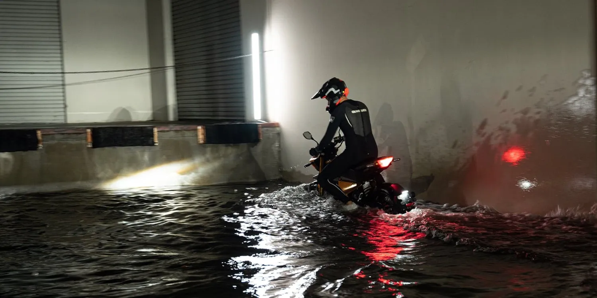

Top 2024 Motorcycles By Manufacturer
Kawasaki ZX-4RR 15,000RPM!

Watch this electric motorcycle ride battery deep through California flood waters.
Read More
21 Cool New Motorcycles at AIMExpo 2024
Read More
Kawasaki Ninja Loudest Exhaust Sound